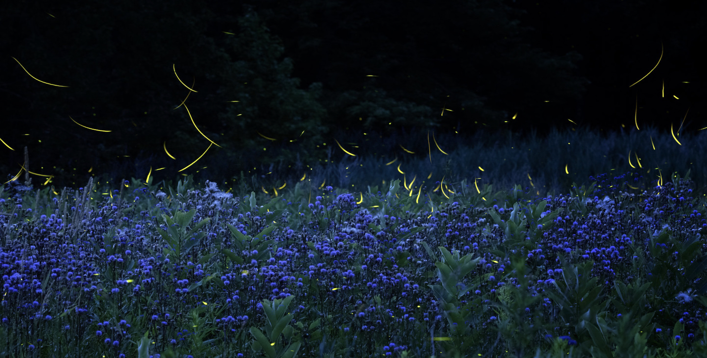
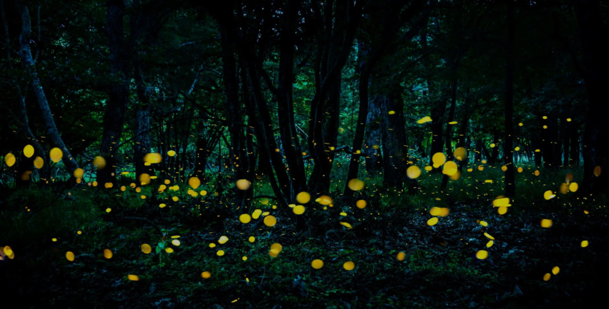

Learn more about fireflies and help conserve these spectacular bioluminescent wonders


Ah, never of a summer night
Will life again be half as sweet
As in that country of delight
Where straying, staying, with happy feet,
We watched the fire-flies in the wheat.
~
Where to sight fireflies in the US
Click on a green dot to learn more about the firefly watching site and the common species found there.
Click on the links below to learn more about the firefly watching site: